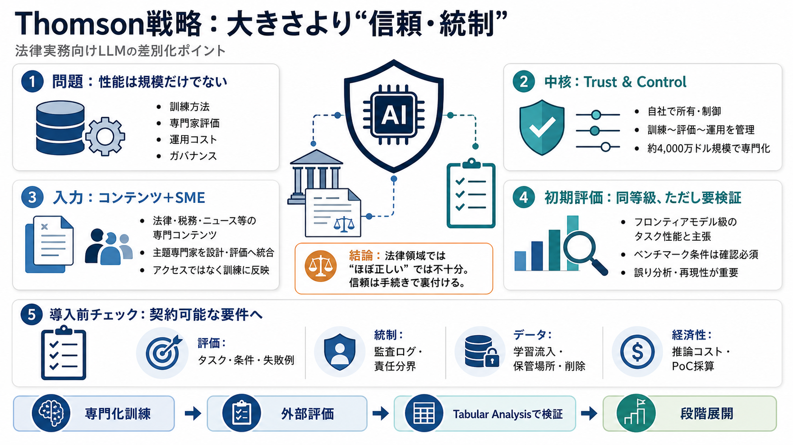

Thomson Reuters Provides Benchmarking Data for ... - Law.com
The Thomson LLM, which will be integrated into CoCounsel Legal’s Tabular Analysis feature next month, was tested against…

Thomson Reutersの独自LLM「Thomson」は、「大きさ」競争から離れ、法律実務で求められる信頼（Trust）と統制（Control）を差別化の中心に据えています。
LLMの良し悪しは、データ量やモデル規模だけで決まりません。訓練方法（mid-training/post-training）、専門家関与、評価（evaluation）、そして実行場所やコストなど運用で大きく変わります。
Thomson Reutersは、モデルを自社で所有・制御し、訓練・評価・運用までの責任範囲を明確にすることで、プロフェッショナル領域の要件に寄せています。
Thomsonは、長年のプロプライエタリ・コンテンツと多数のSME（Subject Matter Experts）を、設計から評価まで統合して訓練した点を強調しています。
初期評価で、Thomsonは「最新のフロンティアモデルと同等級のタスク性能」を示したと述べられています。
「適切なコンテンツにアクセスできれば一般モデルで十分」という見方に対し、Thomsonは特定ドメインでより大きな伸びを示したとされます。
ThomsonはAI sovereignty（AIの主権）として、訓練方法・バイアス・実行場所・プライバシー保護を第三者任せにせず、説明可能にする必要があると論じています。
最初の投入先として、CoCounsel Legal内のTabular Analysis（大量の構造化文書レビュー）を挙げ、法律実務のワークフロー適合を重視しています。
外部アカデミア向けの評価開始や、Hugging Face上で小型のオープンウェイト版（非商用・学術用途）を提供し、検証を促す姿勢が示されています。
法律領域では正答率だけでは足りません。Thomsonの有効性は、誤りの種類・失敗パターン・評価条件・運用設計で“検証”される必要があります。
購入判断では、モデル性能を“契約可能な要件”に落とし込みます。以下は本文だけでは不明な点を、追加資料やPoCで詰める観点です。
本レポートは、ユーザー提供の要約・本文要旨を材料に整理しています。最終判断には、原報の技術報告書・ベンチマーク条件・評価設計・ライセンス/運用仕様の確認が必要です。
The Thomson LLM, which will be integrated into CoCounsel Legal’s Tabular Analysis feature next month, was tested against…
Thomson’s first integration will launch in August inside Tabular Analysis in CoCounsel Legal, and that choice was delibe…
## Legaltech News's Post ### Legaltech News July 31 at 6:03 AM · The Thomson LLM, which will be integrated into CoCo…
As of February, more than 1 million professionals across 107 countries and territories had chosen CoCounsel, according t…
Thomson Reuters details their comprehensive approach to evaluating and deploying long-context LLMs in their legal AI ass…